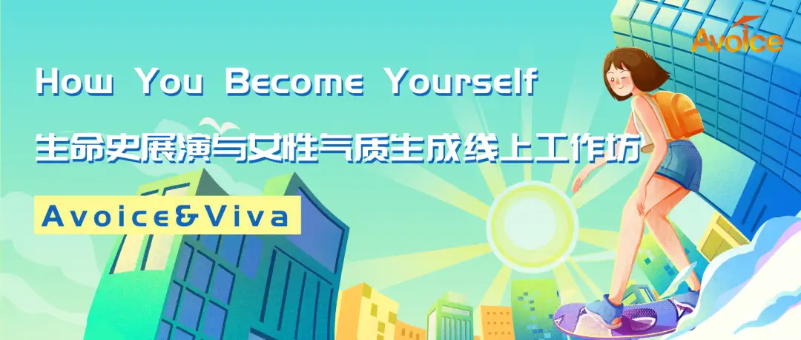
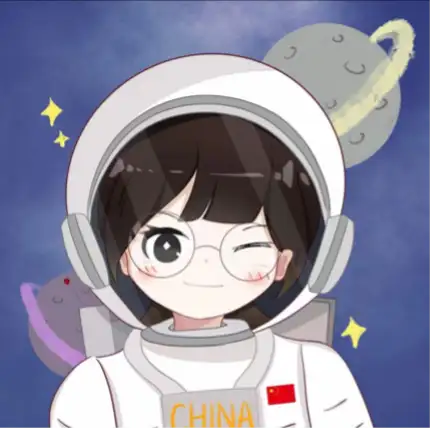
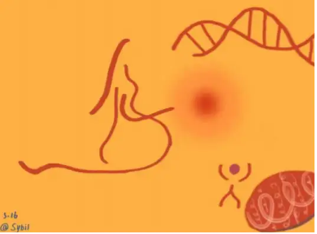
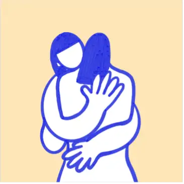
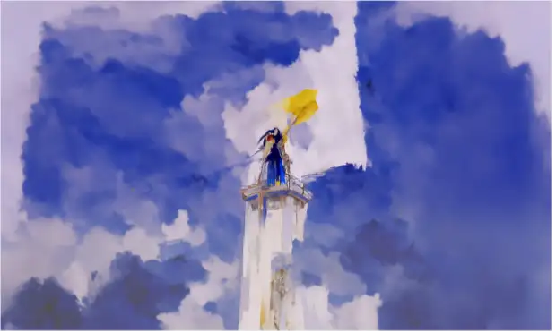
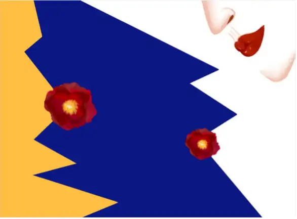
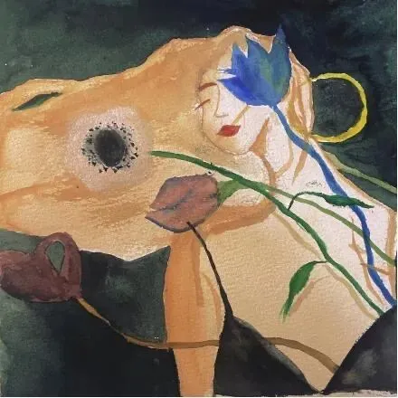
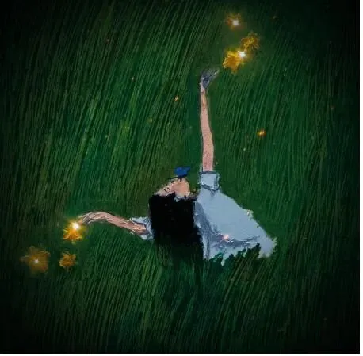

引言：
女性蕴藏的深沉力量正在于不妥协、不顺从、细腻而有远见、炽烈而自由——这些都在被新时代女性生动地表达着。本次“How You Become Yourself: 生命史展演与女性气质生成”线上工作坊，让我们一起走近女性的生命力量。
活动目录 CONTENT
一、破冰与头像风暴
二、嘉宾分享
三、女性生命力画像展示
一
破冰与头脑风暴
参会者围绕“意识到自己身为女性的瞬间”展开了深入交流。小严（化名）叙述了她在国内外不同社会环境中的成长与挣扎，以及由此引发的对自我身份的反思与解构、对自我生命的重建与超越。作为前BAT公司的HR，小严从“不喜欢被物质世界束缚，不适应国内环境”，到选择“放弃国内高薪优渥的工作移居至比利时从头开始”，她“逐渐接受自己，为自己是这样的女性而骄傲”。
另外一位参与者，小葛（化名）则勾勒了她生命中带有女性印迹的时刻，认为女性同样可以是自由、力量、独立的代名词。在小严和小葛这两位嘉宾的启发下，其他参与者也从个体角度思考了自己的女性身份，并通过线上交流与他人的生命际遇产生了联结。
二
嘉宾分享
本次活动有幸邀请到了社会工作者、“残障BEST姐妹花”创始人孙艳老师，分享自己作为一名残障女性，从一名性别平等的倡导者到残障公益人的生命历程。
- 孙艳老师 -
现任乐益融社会工作事务所执行主任
爱尔兰高威大学残障法访问学者
社会性别领域专业从业者
社会工作者
孙艳老师经常走进校园，向大学教师普及性别平等意识以及多元性别的理念，与此同时，残障领域的工作让她发现性别意识在残障人群中似乎被模糊——“大家都围绕着疾病、围绕着生理缺陷来提出自己的需求”，但观念的缺乏让他们忽略了性别维度的思考。意识到了这个问题之后，孙艳老师开始致力于在全国的残障赋能机构做性别培训、宣讲多元意识。
孙艳老师和她的公益伙伴们希望通过宣传残障女性的精彩故事，让大众突破新闻报道的局限性，逐渐认识到更多面与鲜活的残障女性群体，找寻自身与这些故事的共通之处，从而打破大众对残障群体的刻板印象。最后，孙艳老师紧扣本次活动主题，分享了这样一句话：“助人自助，生命影响生命，我们一路同行。”
三
女性生命力画像展示
在本次活动的尾声，我们迎来了大家期盼已久的女性生命力画像分享环节。

“我从小热爱航天与天文，因此以航天员的形象来展示自己，旁边的星星可以代表我的idea。希望大家都能做自己，去追寻自己的梦想。”
——Knox
除了现场分享以外，我们也在提前收集的三四十幅生命画像中挑选了一部分进行展示，其它作品也会在后续生命画像画展中统一展出：
首先是一幅与生物相关的作品，结合了“女娲造人”的神话故事与生物学中的DNA双螺旋。

“女娲造人图。前几日阅读部编版教材《女娲造人》一文时，被其中活力、可爱的女娲形象所感动。可爱的女娲在成为妈妈之后变化了吗？我不得而知，但我的妈妈确实为她的孩子变化了太多。妈妈27岁有我，我上小学时她才不过33岁。那时我总是埋怨妈妈只知道上班。马上我就要21岁了，之后要不要小朋友的想法偶尔也会成为我的思虑，我想我可能做不到像她那样好吧。”
——酱酱，20岁，学生
接下来的两幅作品偏重于色彩和抽象，它们的作者也写下了一些意味深长的注释：

“女性的温暖总是让我第一时间想起她们给我的拥抱”
——小白，28岁，油画师

“权利，平等和自由”
——Clear，24岁，学生

“我们有吻棘花的优雅与从容，不必因囚窘境而狼狈。”
——张涵琪，21岁，学生
以下几幅作品更加注重对于女性具体形象的刻画，也是生命画作中较为较常见的形式：

“倔强的，多样的，蓬勃生命的”
——栩栩，17岁，学生

“沉入绿海，璀璨盛开，蝴蝶自来，向光而寻。”
——Charlotte，26岁，市场经理
截止到这里，生命画作分享环节就告一段落，更多画作将会在后续画展中统一展出，敬请期待！
结语：
“我生来就是高山而非溪流，我欲于群峰之巅俯视平庸的沟壑。我生来就是人杰而非草芥，我站在伟人之肩藐视卑微的懦夫。“
每个人心中关于女性气质与力量的画卷都在缓缓形成，以共鸣为画纸，用才情作画笔，我们心中关于“她”的独特形象正被绘制着：她们是可看见的笑容、可感知的灵魂。
文章、图片 I Avoice&Viva联合团队
排版、封面 I 戴翰林